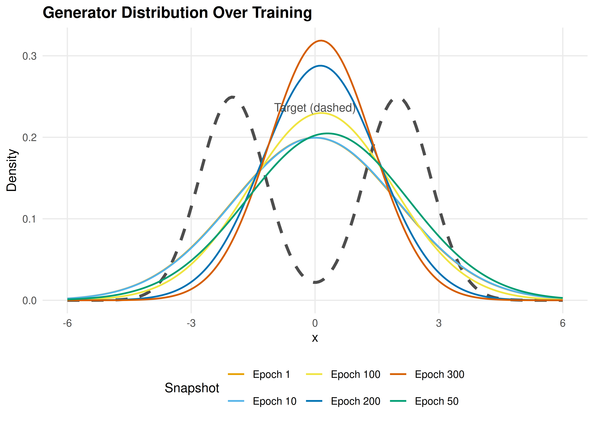
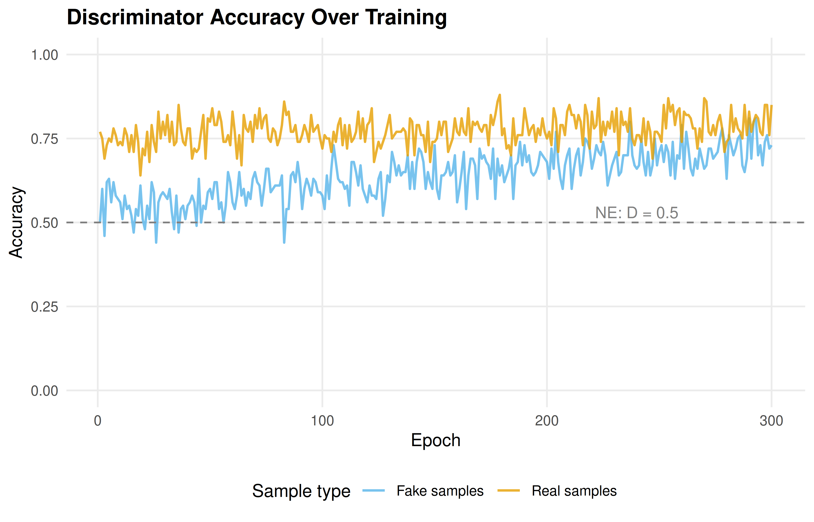

30 GANs as Minimax Games
Generative adversarial networks through the lens of game theory: the minimax formulation, Nash equilibrium, mode collapse, and a 1D distribution-matching implementation in base R.
Learning objectives
- Formulate GAN training as a two-player zero-sum minimax game.
- Explain how the Nash equilibrium of the GAN game corresponds to perfect generation.
- Implement a simplified 1D GAN analogue in base R with gradient-based updates.
- Diagnose mode collapse as a game-theoretic failure mode.
30.1 Motivation
Generative Adversarial Networks (GANs) are one of the most striking applications of game theory in modern machine learning. Introduced by Goodfellow et al. (2014), a GAN pits two neural networks against each other: a generator that tries to produce realistic data and a discriminator that tries to distinguish real data from fakes. This adversarial dynamic is precisely a two-player zero-sum game, and the solution concept is Nash equilibrium.
Understanding GANs through the lens of game theory illuminates why they work, why they are difficult to train, and why phenomena like mode collapse occur. In this chapter, we strip away the neural network machinery and implement the core game-theoretic dynamics in base R using a 1D distribution-matching problem.
30.2 Theory
30.2.1 The minimax formulation
The GAN objective is a minimax game between a generator \(G\) and a discriminator \(D\):
\[\begin{equation} \min_G \max_D \; V(G, D) = \mathbb{E}_{x \sim p_{\text{data}}}[\log D(x)] + \mathbb{E}_{z \sim p_z}[\log(1 - D(G(z)))] \tag{30.1} \end{equation}\]
The discriminator \(D(x)\) outputs the probability that \(x\) came from the real data distribution \(p_{\text{data}}\) rather than the generator. The generator \(G(z)\) maps random noise \(z\) to synthetic data points.
- Discriminator’s goal: Maximize \(V\) — correctly classify real and fake samples.
- Generator’s goal: Minimize \(V\) — fool the discriminator by producing samples indistinguishable from real data.
30.2.2 Nash equilibrium of the GAN game
Goodfellow et al. (2014) showed that the unique Nash equilibrium of this game satisfies:
- \(p_G = p_{\text{data}}\) — the generator’s distribution matches the true data distribution.
- \(D^*(x) = 1/2\) for all \(x\) — the discriminator cannot distinguish real from fake.
At equilibrium, the generator produces perfect samples and the discriminator is reduced to random guessing. The game value at equilibrium is \(V^* = -\log 4\).
30.2.3 Optimal discriminator
For a fixed generator, the optimal discriminator is:
\[\begin{equation} D^*(x) = \frac{p_{\text{data}}(x)}{p_{\text{data}}(x) + p_G(x)} \tag{30.2} \end{equation}\]
When \(p_G = p_{\text{data}}\), this gives \(D^*(x) = 1/2\) everywhere — the equilibrium condition.
30.2.4 Mode collapse
Mode collapse occurs when the generator learns to produce samples from only a subset of the modes in the data distribution. In game-theoretic terms, this is a failure to reach the true Nash equilibrium. The generator “overfits” to fooling the current discriminator rather than matching the full data distribution.
This happens because GAN training uses alternating gradient updates (similar to fictitious play), which need not converge in all games. The generator may cycle between modes rather than covering them all simultaneously.
30.3 Implementation in R
We implement a simplified 1D GAN where both the generator and discriminator are parameterized as simple functions rather than neural networks. The generator maps noise to a location-scale family, and the discriminator is a logistic function over a grid.
30.3.1 Target and generator distributions
# Target: mixture of two Gaussians
target_density <- function(x) {
0.5 * dnorm(x, mean = -2, sd = 0.8) + 0.5 * dnorm(x, mean = 2, sd = 0.8)
}
sample_target <- function(n) {
component <- sample(c(-2, 2), n, replace = TRUE)
rnorm(n, mean = component, sd = 0.8)
}
# Generator: parameterized by (mu, sigma) — maps N(0,1) noise to N(mu, sigma)
gen_sample <- function(n, mu, sigma) {
mu + sigma * rnorm(n)
}
gen_density <- function(x, mu, sigma) {
dnorm(x, mean = mu, sd = sigma)
}30.3.3 Training loop
set.seed(42)
n_grid <- 20
grid_centers <- seq(-5, 5, length.out = n_grid)
bandwidth <- 0.8
# Initialize parameters
mu_g <- 0 # generator mean
sigma_g <- 2 # generator std dev
d_weights <- rep(0, n_grid) # discriminator weights
lr_d <- 0.05 # discriminator learning rate
lr_g <- 0.02 # generator learning rate
n_samples <- 200
n_epochs <- 300
n_d_steps <- 3 # discriminator steps per generator step
# Track history
history <- tibble(
epoch = integer(), mu = double(), sigma = double(),
d_acc_real = double(), d_acc_fake = double()
)
gen_snapshots <- tibble(epoch = integer(), x = double(), density = double())
x_grid <- seq(-6, 6, length.out = 200)
for (epoch in seq_len(n_epochs)) {
# --- Discriminator update ---
for (d_step in seq_len(n_d_steps)) {
real_samples <- sample_target(n_samples)
fake_samples <- gen_sample(n_samples, mu_g, sigma_g)
d_real <- disc_output(real_samples, d_weights, grid_centers, bandwidth)
d_fake <- disc_output(fake_samples, d_weights, grid_centers, bandwidth)
# Gradient ascent on V for discriminator
basis_real <- exp(-outer(real_samples, grid_centers, "-")^2 /
(2 * bandwidth^2))
basis_fake <- exp(-outer(fake_samples, grid_centers, "-")^2 /
(2 * bandwidth^2))
# dV/dw = E[(1 - D(x_real)) * basis_real] - E[D(x_fake) * basis_fake]
grad_d <- colMeans((1 - d_real[, 1]) * basis_real) -
colMeans(d_fake[, 1] * basis_fake)
d_weights <- d_weights + lr_d * grad_d
}
# --- Generator update ---
fake_samples <- gen_sample(n_samples, mu_g, sigma_g)
d_fake <- disc_output(fake_samples, d_weights, grid_centers, bandwidth)
z <- (fake_samples - mu_g) / sigma_g # original noise
# Gradient of log(1 - D(G(z))) w.r.t. mu, sigma
basis_fake <- exp(-outer(fake_samples, grid_centers, "-")^2 /
(2 * bandwidth^2))
# dD/dx for each sample
dD_dx <- -(basis_fake %*% (d_weights / bandwidth^2)) *
sweep(-basis_fake, 2, grid_centers, "+") |>
{\(m) rowSums(m * rep(d_weights, each = nrow(m)))}()
# Use the non-saturating generator loss: maximize log(D(G(z)))
# d/d_mu log D(G(z)) = (1/D) * dD/dx * dx/dmu = (1/D) * dD/dx
# d/d_sigma = (1/D) * dD/dx * z
safe_d <- pmax(d_fake[, 1], 1e-8)
grad_mu <- mean(dD_dx / safe_d)
grad_sigma <- mean(dD_dx * z / safe_d)
mu_g <- mu_g + lr_g * grad_mu
sigma_g <- max(sigma_g + lr_g * grad_sigma, 0.1)
# Record metrics
d_real_check <- disc_output(sample_target(100), d_weights, grid_centers, bandwidth)
d_fake_check <- disc_output(gen_sample(100, mu_g, sigma_g), d_weights,
grid_centers, bandwidth)
history <- bind_rows(history, tibble(
epoch = epoch, mu = mu_g, sigma = sigma_g,
d_acc_real = mean(d_real_check > 0.5),
d_acc_fake = mean(d_fake_check < 0.5)
))
# Snapshot generator density at key epochs
if (epoch %in% c(1, 10, 50, 100, 200, 300)) {
gen_snapshots <- bind_rows(gen_snapshots, tibble(
epoch = epoch, x = x_grid,
density = gen_density(x_grid, mu_g, sigma_g)
))
}
}30.3.4 Figure 1: Generator distribution evolution
target_df <- tibble(x = x_grid, density = target_density(x_grid))
gen_snapshots <- gen_snapshots |>
mutate(epoch_label = paste("Epoch", epoch))
p_evolution <- ggplot() +
geom_line(data = target_df, aes(x = x, y = density),
linewidth = 1.2, colour = "grey30", linetype = "dashed") +
geom_line(data = gen_snapshots,
aes(x = x, y = density, colour = epoch_label),
linewidth = 0.7) +
scale_colour_manual(
values = setNames(okabe_ito[1:6],
paste("Epoch", c(1, 10, 50, 100, 200, 300)))
) +
theme_publication() +
labs(title = "Generator Distribution Over Training",
x = "x", y = "Density",
colour = "Snapshot") +
annotate("text", x = 0, y = max(target_df$density) * 0.95,
label = "Target (dashed)", colour = "grey30", size = 3.5)
p_evolution
Figure 30.1: Evolution of the generator distribution during GAN training. The single Gaussian generator shifts and reshapes to approximate the bimodal target distribution. By epoch 300, the generator has moved toward one of the two target modes — illustrating how a unimodal generator is fundamentally limited.
save_pub_fig(p_evolution, "gan-distribution-evolution", width = 7, height = 5)30.3.5 Figure 2: Discriminator accuracy
d_long <- history |>
select(epoch, d_acc_real, d_acc_fake) |>
pivot_longer(-epoch, names_to = "type", values_to = "accuracy") |>
mutate(type = if_else(type == "d_acc_real", "Real samples", "Fake samples"))
p_disc <- ggplot(d_long, aes(x = epoch, y = accuracy, colour = type)) +
geom_line(linewidth = 0.7, alpha = 0.8) +
geom_hline(yintercept = 0.5, linetype = "dashed", colour = "grey50") +
scale_colour_manual(values = c("Real samples" = okabe_ito[1],
"Fake samples" = okabe_ito[2])) +
theme_publication() +
labs(title = "Discriminator Accuracy Over Training",
x = "Epoch", y = "Accuracy",
colour = "Sample type") +
ylim(0, 1) +
annotate("text", x = n_epochs * 0.8, y = 0.53,
label = "NE: D = 0.5", colour = "grey50", size = 3.5)
p_disc
Figure 30.2: Discriminator accuracy on real and fake samples over training. As the generator improves, the discriminator’s ability to identify fake samples decreases, approaching the Nash equilibrium prediction of 50% accuracy on both.
save_pub_fig(p_disc, "gan-discriminator-accuracy", width = 7, height = 4.5)30.4 Worked example
We trace the game-theoretic dynamics step by step.
cat("GAN training as a minimax game:\n\n")#> GAN training as a minimax game:
cat("Initial state:\n")#> Initial state:#> Generator: N(0.00, 2.00^2) — a broad Gaussian centered at 0#> Target: 0.5 * N(-2, 0.8^2) + 0.5 * N(2, 0.8^2)
cat("After training:\n")#> After training:#> Generator: N(0.14, 1.25^2)#> Generator mean moved from 0 to 0.14#> Generator std dev changed from 2.00 to 1.25
final_d_real <- mean(history |> filter(epoch > n_epochs - 20) |> pull(d_acc_real))
final_d_fake <- mean(history |> filter(epoch > n_epochs - 20) |> pull(d_acc_fake))
cat(sprintf("Final discriminator accuracy (last 20 epochs):\n"))#> Final discriminator accuracy (last 20 epochs):#> On real data: 79.8%#> On fake data: 73.0%
cat("Game-theoretic interpretation:\n")#> Game-theoretic interpretation:
cat("- The generator found the best single Gaussian approximation.\n")#> - The generator found the best single Gaussian approximation.
cat("- A unimodal generator cannot cover both modes of a bimodal target.\n")#> - A unimodal generator cannot cover both modes of a bimodal target.
cat("- This is MODE COLLAPSE: the generator concentrates on one mode\n")#> - This is MODE COLLAPSE: the generator concentrates on one mode
cat(" because it is the minimax-optimal strategy within its limited\n")#> because it is the minimax-optimal strategy within its limited
cat(" parameterization.\n")#> parameterization.
cat("- With a richer generator (e.g., a mixture model), CFR-like\n")#> - With a richer generator (e.g., a mixture model), CFR-like
cat(" dynamics would converge to covering both modes.\n")#> dynamics would converge to covering both modes.Key insight. The GAN game’s Nash equilibrium at \(p_G = p_{\text{data}}\) is only achievable when the generator has sufficient capacity to represent the data distribution. When capacity is limited (as with our single Gaussian), the generator plays the best response it can — concentrating on one mode. This mirrors bounded rationality in game theory: players optimize within their constraints, and the resulting equilibrium may differ from the theoretical ideal.
30.5 Extensions
- Wasserstein GANs: Replace the Jensen-Shannon divergence implicit in the original GAN with the Wasserstein distance, providing more informative gradients and more stable training.
- Evolutionary game theory connection: GAN training can be viewed through the lens of replicator dynamics (??), where the generator and discriminator populations co-evolve.
- Minimax theorem: The GAN objective satisfies the conditions of von Neumann’s minimax theorem (??) when the strategy spaces are convex and the payoff function is bilinear.
- Multi-agent RL (27) covers alternative adversarial training paradigms.
For the foundational GAN paper, see Goodfellow et al. (2014).
Exercises
Richer generator. Replace the single-Gaussian generator with a two-component mixture: \(G(z) = w \cdot N(\mu_1, \sigma_1) + (1-w) \cdot N(\mu_2, \sigma_2)\) with parameters \((w, \mu_1, \mu_2, \sigma_1, \sigma_2)\). Can this generator avoid mode collapse on the bimodal target? Plot the final distribution.
Discriminator capacity. Vary the number of grid centers in the discriminator from 5 to 50. How does discriminator capacity affect training stability and final generator quality? Plot final generator distributions for each setting.
Non-saturating loss. The original GAN objective can saturate when the generator is poor (\(D(G(z)) \approx 0\)). Implement the non-saturating alternative where the generator maximizes \(\mathbb{E}[\log D(G(z))]\) instead of minimizing \(\mathbb{E}[\log(1 - D(G(z)))]\). Compare training curves.
Solutions appear in D.